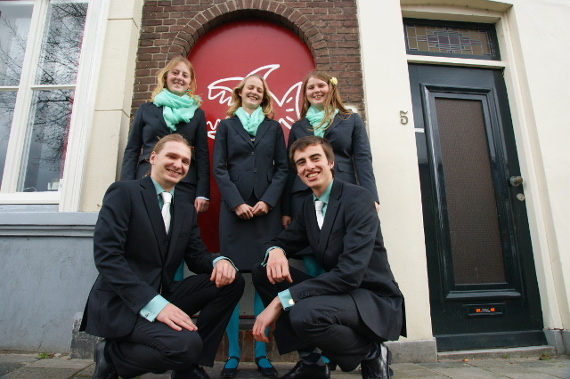

De Bolk
D.S.V. "Nieuwe Delft"
Activiteiten
Het hele jaar door organiseren leden en commissies van De Bolk veel activiteiten en feesten. De meest recente updates vind je op de Facebook-pagina.
Eettafel
Van maandag tot en met donderdag om 18:30 uur is er op de Bolk een open eettafel waar je voor €3,50 een lekkere driegangenmaaltijd kunt krijgen. Iedereen is welkom om mee te eten. Je moet je daarvoor wel aanmelden via bolknoms (vóór 15:00 uur) zodat we weten hoeveel mensen er mee eten.
Alle maaltijden worden verzorgd door leden van De Bolk. Ieder lid, eerstejaars of niet, moet daarom één keer per maand een corveetaak doen. Dat kan koken, afwassen of een bardienst zijn.
Lid worden
Lid worden bij de D.S.V. Nieuwe Delft kan altijd, zelfs op zon- en feestdagen. De meeste nieuwe leden worden lid tijdens de OWee in augustus. Dat heeft voordelen: je kunt direct mee op kennismakingstijd (KMT), een relaxt weekje zeilen op het IJsselmeer, en kent direct al je jaargenoten. Meer informatie over de OWee vind je op de OWee-website van De Bolk. Je kunt altijd ook buiten de OWee lid worden, je hebt alleen kans dat we wat langer moeten zoeken naar een inschrijfformulier.
Lid worden bij D.S.V. Nieuwe Delft kan in slechts vijf stappen:
- Zoek een Bolker (er zijn er 's avonds altijd wel een paar in de soos te vinden)
- Zeg: 'Ik wil graag lid worden'
- Wacht tot de Bolker een inschrijfformulier voor je heeft gehaald.
- Vul het inschrijfformulier in en geef het terug aan de bolker.
- Gefeliciteerd! Je hebt je succesvol ingeschreven bij de D.S.V. Nieuwe Delft.
Lid-af worden
Het kan natuurlijk zijn dat je na een tijdje je lidmaatschap bij De Bolk wilt beëindigen. Dat vinden we heel jammer, zeker als je voor het einde van je studie vertrekt. Als je je lidmaatschap beëindigt wegens het succesvol afronden van je studie, kun je oud-lid worden van De Bolk en lid worden van de Verening Oud-Leden der D.S.V. "Nieuwe Delft". Als je je lidmaatschap bij De Bolk wilt beëindigen, stuur dan een duidelijke e-mail naar secretaris@nieuwedelft.nl.
Verhuur
Het is mogelijk de sociëteit te huren voor afstudeerborrels, een verjaardagsfeestje of diner. De Bolk biedt een gezellige sociëteitsruimte voor feesten tot 130 personen. Daarnaast beschikt de sociëteit over een ruime, goed voorziene keuken waarin uitgebreide diners kunnen worden bereid tot 60 man.
Voor verhuur van de sociëteit gelden twee belangrijke beperkingen. In principe is de sociëteit van maandag tot donderdag in gebruik voor leden van De Bolk. Verhuur kan dus alleen op vrijdag, zaterdag of zondag ingepland. In overleg kan hier soms een uitzondering op worden gemaakt, zeker als leden van De Bolk actief uitgenodigd worden voor het feest of de activiteit. In verband met paracommerciële bepalingen van de Gemeente Delft wordt de sociëteit alleen verhuurd aan leden of oud-leden van De Bolk, of vrienden van hen. Op deze beperking kan geen uitzondering worden gemaakt.
Wil je een datum claimen? Voor meer informatie en de planning kun je contact opnemen met de secretaris via secretaris@nieuwedelft.nl.


Contact
De Bolk (D.S.V. "Nieuwe Delft")
Buitenwatersloot 1-3
2613 TA Delft.
Telefoon: 015 212 60 12
E-mail: info@nieuwedelft.nl
KVK-nummer: 40397267
BTW-nummer: NL5359582B01
Bestuur
De vereniging wordt bestuurd door het 54e bestuur:
| President | Marieke van der Tuin | president@nieuwedelft.nl |
| Secretaris | Yvonne Haartsen | secretaris@nieuwedelft.nl |
| Thesaurier | Roderik Vogels | thesaurier@nieuwedelft.nl |
| Commissaris Bar en Sociëteit | Anne Brus | barcom@nieuwedelft.nl |
| Commissaris Maaltijden | Bram van Zwet | maaltijdcom@nieuwedelft.nl |
Oud-besturen